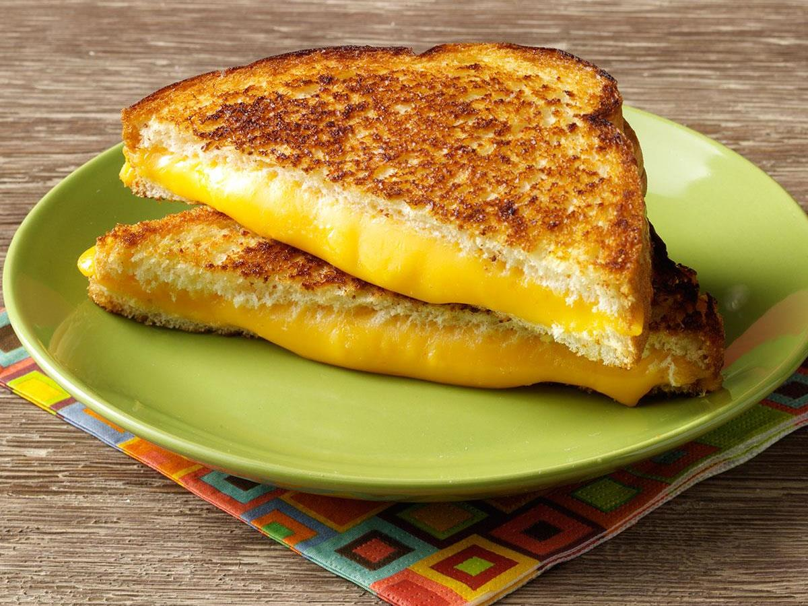

Grilled Cheese

Description
The grilled cheese sandwich is a hot sandwich prepared by heating
one or more slices of cheese between slices of bread. A cooking fat
such as butter is used to coat the bread before heating it on a
grill, frying pan, or inside an oven.
Ingredients
- Bread
- Sliced cheese
- Butter
Steps
- Place one or more slices of cheese between two pieces of bread.
- Apply a thin layer of butter on the outer face of the sandwich.
- Heat the sandwich on a frying pan.
- Cook shortly on one side before flipping it over.
- Cook on the other side until both sides are golden brown.